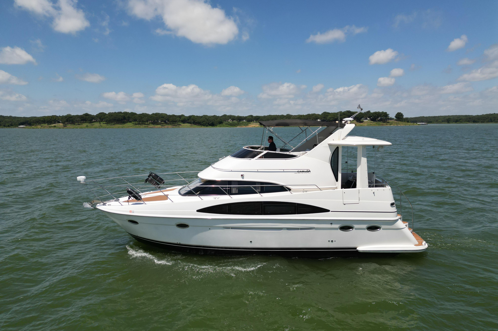

B-Scout Boat Guide · GULF-49-MC
Gulfstar 49 Motor Yacht Motor Yacht
1984–1987
The Gulfstar 49 Motor Yacht reflects Gulfstar's broad 1970s–1980s range from sail-derived trawlers and motorsailers to larger motor yachts. The specific model's hull form, speed and accommodation must be judged independently rather than treating all Gulfstars as conventional trawlers.

- Length
- 49 ft
- Beam
- 15.08 ft
- Draft
- 3.83 ft
- Hull behaviour
- Semi-Displacement
- Fuel
- Diesel
- Propulsion
- Shaft
- Engine configuration
- Twin Perkins 350 hp or GM 6-71 diesel packages
- Boat family
- Cruiser
- Construction
- Fiberglass
Best for
- Cruising buyers who understand the specific Gulfstar generation
- Owners comfortable maintaining older systems-rich fiberglass yachts
- Inland and coastal cruising where the documented model mission fits
Trade-offs
- Model families differ substantially in hull construction and performance
- Age makes tanks, deck penetrations, wiring and machinery condition critical
- Larger models carry significant systems, air-draft and operating-cost burdens
Known concerns
- No model-specific concern has been promoted to B-Scout’s evidence threshold. This does not mean the model has no age-, condition- or hull-specific risks.
Inspection focus
- Verify exact model and generation against hull documentation
- Inspect deck/core areas, windows and structural penetrations
- Inspect fuel/water tanks, wiring, plumbing, generator and HVAC systems
- Inspect engines, exhaust, cooling, shafts, rudders and keel
- Confirm air draft and actual displacement for intended route and haul-out
Continue researching
Related boat models
Gulfstar 44 Motor Cruiser Motor Cruiser
44.42 ft · Semi-Displacement
Gulfstar 43 Trawler Trawler
43.33 ft · Semi-Displacement
Back Cove 39O Outboard Salon Cruiser
43.5 ft · Planing
Cruisers Yachts 3870 Esprit / Express Express Cruiser
43.25 ft · Planing
Kadey-Krogen 44 AE Advanced Ergonomics
49 ft · Displacement
DeFever 49 Cockpit Motor Yacht Cockpit Motor Yacht
48.83 ft · Semi-Displacement
About this record
B-Scout preserves uncertainty: missing information remains unknown rather than being treated as a negative. Specifications and guidance describe the model record; individual boats can differ by year, equipment, refit and condition.